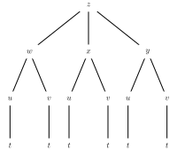

Suppose you own a small factory that makes \(30\) widgets per hour and you make a profit of \(\$10.00\) for each of the widget made. (You are able to sell them as fast as you produce them.) At what rate does your company’s profit increase?
Activity2.3.2.
Let \(h(x) = \sqrt{x^2 + 1}\text{.}\)
(a)
For which pair of function \(f\) and \(g\) is \(h(x) = f(g(x))\text{?}\)
Suppose that you are on a ship at sea. The vector-valued function \(\vr(t) = \langle x(t), y(t) \rangle\) is your trajectory along the surface of the ocean, and \(T(x,y)\) is the temperature at sea level at the location with coordinates \((x,y)\text{.}\) What is the rate of change of the temperature you feel as you sail along your trajectory?
To answer this question, we will start with an approximation. At a certain time \(t\text{,}\) the temperature we experience is \(T(x(t), y(t))\text{.}\) If we let time increase by a small amount \(\Delta t\text{,}\) then our position coordinates will change by corresponding small amounts \(\Delta x\) and \(\Delta y\text{.}\) We know from single-variable calculus that
We also know that the small changes in \(x\) and \(y\) create proportionally small changes in temperature. The change in temperature can be approximated using the tangent plane.
\begin{equation*}
\Delta T \approx \frac{\partial T}{\partial x} \Delta x + \frac{\partial T}{\partial y} \Delta y
\end{equation*}
Since we are interested in the rate of change of \(T\) with respect to \(t\text{,}\) divide this equation by \(\Delta t\) and take the limit as \(\Delta t\) approaches zero.
In other words, we have found a formula for the derivative of the composition \(T(\vr(t))\text{,}\) in terms of the vector-valued function \(\vr(t)\) (inside function) and multivariable function \(T(x,y)\) (outside function).
The Chain Rule.
Let \(z = f(x,y)\text{,}\) where \(f\) is a differentiable function of the independent variables \(x\) and \(y\text{,}\) and let \(x\) and \(y\) each be differentiable functions of an independent variable \(t\text{.}\) Then
In the following questions, we apply the Chain Rule in several different contexts.
Suppose that we have a function \(z\) defined by \(z(x,y) = x^2+xy^3\text{.}\) In addition, suppose that \(x\) and \(y\) are restricted to points that move around the plane by following a circle of radius \(2\) centered at the origin that is parameterized by
Use the Chain Rule to find the resulting instantaneous rate of change \(\frac{dz}{dt}\text{.}\)
Substitute \(x(t)\) for \(x\) and \(y(t)\) for \(y\) in the rule for \(z\) to write \(z\) in terms of \(t\) and calculate \(\frac{dz}{dt}\) directly. Compare to the result of part (i.).
Suppose that you are walking along a surface whose elevation is given by a function \(f\text{.}\) Furthermore, suppose that if you consider how your location corresponds to points in the \(xy\)-plane, you know that when you pass the point \((2,1)\text{,}\) your velocity vector is \(\vv=\langle -1,2\rangle\text{.}\) If some contours of \(f\) are as shown in Figure 2.3.1, estimate the rate of change \(df/dt\) when you pass through \((2,1)\text{.}\)
Figure2.3.1.Some contours of \(f\text{.}\)
Note that the chain rule has the obvious extension to function of \(f(x,y,z)\) of three variables composed with a vector-valued function \(\vr(t) \lrangle{x(t), y(t), z(t)}\text{.}\) In fact, any mutivariable function \(f:\R^n \to \R\) can be composed with \(n\) different multivariable functions \(u_i : \R^m \to \R\text{.}\) Instead of writing a version of the chain rule for each case, we can write a single general version of the chain rule that covers all of these cases. If \(z = f(x_1, \ldots, x_n)\) and \(x_i = u_i(t_1, \ldots, t_m)\text{,}\) then
To keep track of all the dependencies among the variables, it’s helpful to use a tree diagram.
Figure2.3.2.A tree diagram illustrating dependencies. To represent the Chain Rule, we label every edge of the diagram with the appropriate derivative or partial derivative, as seen at right in Figure 2.3.2. To calculate an overall derivative according to the Chain Rule, we construct the product of the derivatives along all paths connecting the variables and then add all of these products. For example, the diagram at right in Figure 2.3.2 illustrates the Chain Rule
Figure 2.3.3 shows the tree diagram we construct when (a) \(z\) depends on \(w\text{,}\)\(x\text{,}\) and \(y\text{,}\) (b) \(w\text{,}\)\(x\text{,}\) and \(y\) each depend on \(u\) and \(v\text{,}\) and (c) \(u\) and \(v\) depend on \(t\text{.}\)

Figure2.3.3.Three levels of dependencies
Label the edges with the appropriate derivatives.
Use the Chain Rule to write \(\frac{dz}{dt}\text{.}\)
Construct a tree diagram representing the dependencies of \(z\) on \(x\) and \(y\) and \(x\) and \(y\) on \(r\) and \(\theta\text{.}\)
Use the tree diagram to find \(\frac{\partial z}{\partial r}\text{.}\)
Now suppose that \(r = 3\) and \(\theta=\pi/6\text{.}\) Find the values of \(x\) and \(y\) that correspond to these given values of \(r\) and \(\theta\text{,}\) and then use the Chain Rule to find the value of the partial derivative \(\frac{\partial z}{\partial \theta}|_{(3,\frac{\pi}{6})}\text{.}\)